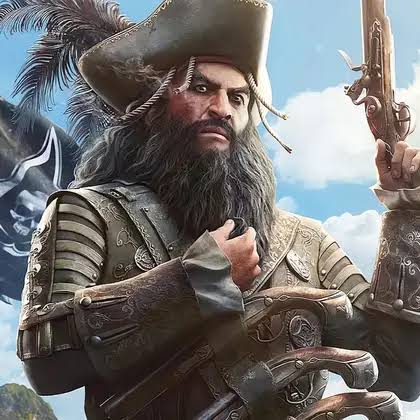
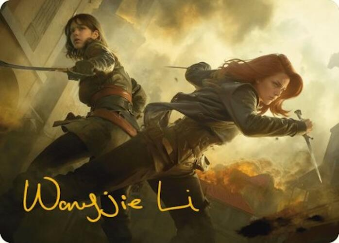

A Era de Ouro da Pirataria no Caribe foi moldada por figuras complexas, divididas entre o desejo de liberdade absoluta e a ganância. Conheça as biografias detalhadas dos principais personagens que cruzaram o caminho de Edward Kenway:
Edward Kenway
Nascido no País de Gales, Edward Kenway era um homem de origens humildes que sonhava com uma vida de riqueza e status para impressionar sua esposa, Caroline. Inicialmente operando como corsário, viu-se desempregado com o fim das guerras e migrou para a pirataria nos mares do Caribe. Arrogante, impulsivo e motivado primariamente pelo ganho material, Edward acaba por se envolver por acaso na guerra milenar entre Assassinos e Templários após eliminar um agente desertor. Ao longo de sua jornada, o peso de suas escolhas egoístas destrói sua tripulação e seus amigos mais próximos. Essa tragédia pessoal o força a amadurecer profundamente, transformando-o de um pirata mercenário em um dedicado Mestre Assassino que passa a lutar pelo livre-arbítrio da humanidade.
Edward Thatch (Barba Negra)
Conhecido mundialmente pelo temido apelido de Barba Negra, Edward Thatch é uma das figuras mais icônicas e teatrais da história da pirataria. No universo do jogo, ele atua como um mentor, figura paterna e confidente de Edward Kenway. Thatch compreende como poucos o impacto psicológico do medo, cultivando uma aparência monstruosa com pavios acesos debaixo do chapéu para aterrorizar seus inimigos sem precisar disparar um único tiro. No entanto, por trás da fachada feroz, Thatch é um homem culto e profundamente consciente de que a Era de Ouro da Pirataria está com os dias contados diante da expansão implacável dos impérios coloniais. Seu sonho final era conquistar um perdão e uma ilha isolada para viver em paz, mas sua trágica morte em combate sela de vez a desilusão de Kenway.

Mary Read (James Kidd) & Anne Bonny
Mary Read e Anne Bonny representam a força, a resiliência e a coragem feminina em um mundo dominado por homens violentos. Mary Read passou grande parte de sua vida disfarçada sob a identidade masculina de James Kidd, atuando inicialmente como capitã corsária e infiltrando-se nos segredos da Irmandade dos Assassinos para guiar Kenway para um caminho de maior propósito moral. Anne Bonny, por sua vez, junta-se à tripulação do Jackdaw após abandonar uma vida difícil em tabernas locais, mostrando-se uma combatente feroz e leal até os momentos mais sombrios da tripulação. Juntas, desafiam todas as convenções sociais da época e protagonizam os momentos mais marcantes da reta final da narrativa do jogo.

Calico Jack (John Rackham) & Benjamin Hornigold
John "Calico" Jack e Benjamin Hornigold ilustram caminhos totalmente opostos dentro da pirataria caribenha. Calico Jack é retratado como um pirata vaidoso, ambicioso e um tanto instável, famoso historicamente por criar a clássica bandeira da caveira com espadas cruzadas (*Jolly Roger*), embora muitas vezes faltasse-lhe a astúcia tática necessária para grandes empreitadas. Em contrapartida, Benjamin Hornigold começa a aventura como um dos líderes mais respeitados e sensatos da República dos Piratas de Nassau, servindo de conselheiro para Kenway. Contudo, com o cerco econômico e militar da Coroa Britânica, Hornigold cede ao medo e aceita o Perdão Real, traindo seus antigos companheiros e tornando-se um caçador de piratas a serviço direto dos Templários.
2. História Real vs. Jogo
*Assassin's Creed IV: Black Flag* combina factos históricos rigorosos com a ficção da saga. Veja como a realidade se compara com o universo do jogo:
A República de Nassau: Na história real, Nassau foi de facto um refúgio sem leis governado por piratas entre 1706 e 1718, caindo devido à tuberculose, ao isolamento e à chegada do Governador Woodes Rogers com o Perdão Real.
A Morte de Barba Negra: O jogo recria com grande precisão a última batalha de Edward Thatch em 1718, na ilha de Ocracoke, onde enfrentou dezenas de soldados britânicos liderados pelo tenente Robert Maynard antes de tombar em combate.
O Julgamento de Mary e Anne: Em 1720, ambas as piratas evitaram a execução imediata ao declararem que estavam grávidas, tal como retratado nas missões finais do jogo.
3. A Linha do Tempo dos Kenway
A saga da família Kenway é uma das mais trágicas e fundamentais de toda a franquia *Assassin's Creed*, ligando três jogos principais:
Edward Kenway (AC IV: Black Flag): Começa como um pirata ganancioso nas Caraíbas (1715-1722), mas redime-se e torna-se um Mestre Assassino na Inglaterra, onde cria os seus filhos.
Haytham Kenway (AC III & AC Rogue): Filho de Edward, é manipulado após a morte do pai e recrutado pela Ordem dos Templários. Torna-se o Grão-Mestre Templário nas Colónias Americanas.
Ratonhnhaké:ton / Connor (AC III): Neto de Edward e filho de Haytham. Connor torna-se um Assassino durante a Revolução Americana, lutando sem saber contra o império construído pelo seu próprio pai.
4. Enredo Detalhado da Campanha
Introdução
Entre 1715 e 1722, durante a Era de Ouro da Pirataria no Caribe, o galês Edward Kenway deixa a Inglaterra em busca de riquezas e status. Com o fim das guerras coloniais, ele migra para a pirataria. Movido por ambição e independência, Edward não começa como herói, mas acaba envolvido na guerra secreta entre Assassinos e Templários.
O Naufrágio e o Início da Aventura
Após uma batalha naval, Edward mata o Assassino renegado Duncan Walpole. Ele assume a identidade do morto para entregar um artefato misterioso e uma carta ao Governador de Havana em troca de recompensa. Ao se reunir com os Templários, Edward descobre sem querer seus planos de dominação ideológica.
Edward Kenway e a Pirataria
Descoberto pelos Templários, Edward é preso em uma frota espanhola. Ele foge ao lado do ex-escravizado Adéwalé, toma um brigue batizado de Jackdaw e torna-se um dos piratas mais temidos do Caribe. Ele forma alianças com piratas lendários como Barba Negra, Benjamin Hornigold, Charles Vane, Mary Read e Anne Bonny, enxergando na pirataria a expressão máxima da liberdade.
O Conflito entre Assassinos e Templários
Edward descobre a existência do Observatório, uma instalação ancestral dos Isu capaz de monitorar qualquer pessoa no mundo. Enquanto os Templários buscam a estrutura para controle social total e os Assassinos tentam protegê-la, Edward quer apenas vendê-la pelo maior valor possível. Para localizá-la, ambas as facções caçam o "Sábio", o pirata Bartholomew Roberts.
A República dos Piratas
Os piratas fundam uma utopia livre em Nassau, mas o local colapsa devido a doenças, vícios e falta de governança. A chegada da Marinha Real Britânica oferecendo o Perdão Real divide os aliados: Hornigold aceita o perdão e passa a caçar piratas, enquanto Barba Negra e Edward recusam se submeter à Coroa.
Barba Negra
Edward Thatch (Barba Negra) percebe o fim da Era dos Piratas e tenta se aposentar. Cercado pelas forças britânicas em Ocracoke, morre em combate diante de Edward. Sua morte faz Kenway questionar pela primeira vez a futilidade da pirataria e o custo de sua ambição.
A Queda de Edward
A obsessão de Edward pelo Observatório destrói suas alianças: Adéwalé o abandona, Vane enlouquece e Hornigold vira seu inimigo. Ao encontrar o Observatório com Roberts, Edward é traído pelo Sábio e entregue às autoridades britânicas, terminando preso em Port Royal.
Mary Read e Anne Bonny
Na prisão, Mary Read e Anne Bonny adiam a execução por estarem grávidas. Com ajuda de Ah Tabai, Edward foge e tenta resgatá-las, mas Mary morre nos seus braços devido às condições da cela. A tragédia leva Edward ao remorso, depressão e à reflexão sobre os impactos de suas escolhas.
Edward se Torna um Assassino
Resgatado por Adéwalé, Edward busca redenção com a Irmandade dos Assassinos em Tulum. Compreendendo o verdadeiro sentido do Credo ("Nada é verdadeiro, tudo é permitido" como responsabilidade moral), ele coloca seu navio e sua lâmina a serviço da ordem para reparar seus erros e combater a tirania Templária.
O Confronto Final
Como Assassino, Edward elimina Bartholomew Roberts, recupera o Crânio de Cristal e mata o Grão-Mestre Templário Laureano de Torres dentro do Observatório. A instalação é selada para proteger o livre-arbítrio da humanidade.
O Destino de Edward
Descobrindo a morte de sua esposa e a existência de sua filha Jennifer, Edward deixa o Caribe, entrega sua mansão em Gran Inagua para a Irmandade e retorna à Inglaterra. Anos depois, casa-se novamente e tem um filho, Haytham Kenway, a quem treina como Assassino antes de ser morto em um ataque Templário à sua casa.
Conclusão
A jornada de Edward Kenway é uma história de maturidade e redenção. Ele evolui de um anti-herói ganancioso e egoísta para um Mestre Assassino consciente, demonstrando que a verdadeira liberdade exige responsabilidade e propósito moral.
.jpg)
.jpg)